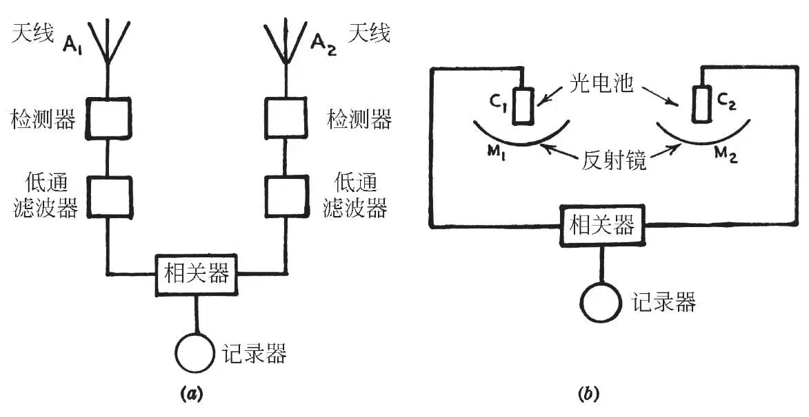
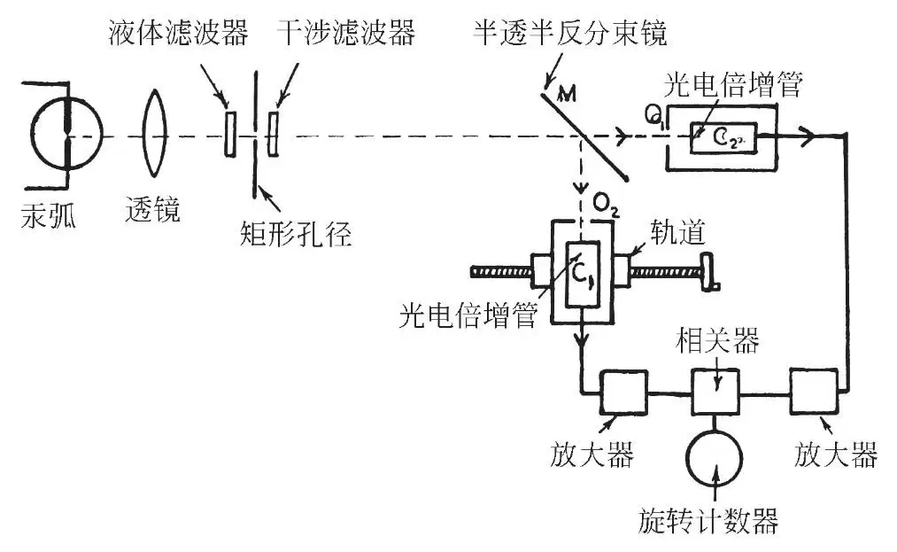
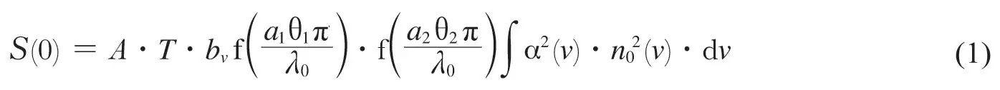
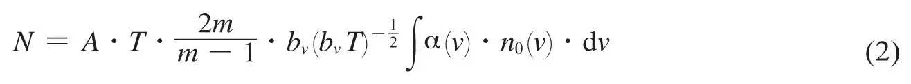
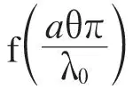
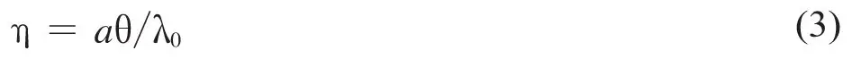
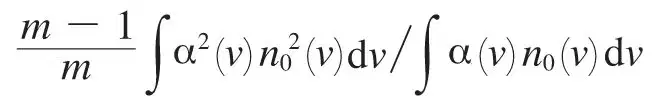
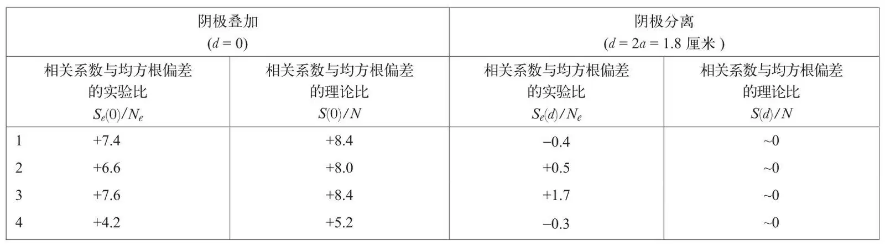

英文
英文汉伯里–布朗，特威斯
编者按
在经典的干涉技术中，由两个相互作用光束之间的相位差可以探查出它们传播路径的不同。20世纪50年代早期，罗伯特·汉伯里–布朗和理查德·特威斯提出了一种新的干涉测量法，此方法仅仅利用光强（非相位）就可以估测遥远恒星的角大小。本文中他们报道了对这种效应所做的实验论证。结果阐释了光子的量子“聚束”效应——两束独立的相干光束中的光子有同时到达两个探测器的趋势。现在，汉伯里–布朗–特威斯效应一般是指使用两个探测器测量出的从一个粒子束发出的信号强度之间的任何相关性或者反相关性。强度干涉法已经成为核物理以及粒子物理中一项重要的技术。 英文
在一篇早期的论文中[1]，我们描述了一台新型的干涉仪，它已被用于测量射电星的角直径[2]。用这台仪器分别检测来自A1和A2两个天线（如图1a所示）的信号，并记录检测器低频输出之间的相关系数。因此我们没有测量到两个射电信号的相对相位，而仅测量到它们强度起伏的相关系数；这种原理与常见的迈克尔逊干涉仪的原理有根本上的差异，因为后者的信号是在检测前合成的，从而必然保留它们的相对相位。 英文

图1．新型射电干涉仪（a）及其在光学波段的类似设备（b） 英文
开发这套新系统是为了利用甚长基线，实验证明它在很大程度上不受电离层闪烁效应的影响[2]。鉴于这套系统的优点，我们提出[1]从原理上它可以用于测量目视恒星的角直径。因此我们可以用M1和M2两面反射镜来代替A1和A2两根天线（如图1b所示），用光电池C1和C2作为射频检测器，将测量到的由恒星照射导致的电池中电流起伏间的相关系数作为反射镜间距的函数。 英文
当然，当入射到两个反射镜上的光束有相干性时，光子到达两个光电阴极的时间应该是相关的，这对于这套系统的运行是很有必要的。然而，据我们所知，目前尚未用光直接观测到这个基本效应，况且此效应存在与否还存在疑问。此外，在光电发射过程中，无法确定是否完全保留着这种相关性。为此，我们开展了下列实验。 英文
图2展示了此套装置的概略图。一个截面为0.13毫米×0.15毫米的小矩形孔径形成光源，高压汞灯在此截面上聚焦成像。我们通过滤波系统将4,358埃的谱线分离出来，光束通过半透半反分束镜M被分成两束，分别照射在光电倍增管C1和C2的阴极上。这两个阴极与光源相距2.65米，它们的面积受到截面为9.0毫米×8.5毫米的相同矩形孔径O1和O2的限制。（可以证明这类仪器的两个阴极与光源之间的距离并不需要精确相等。在目前的实验中，它们的距离只是大致相等，精度约为1厘米。）为了使两束光束的相干度可以任意改变，光电倍增管C1装在水平轨道上，这样光电倍增管C1可以在垂直于入射光的方向上移动。因此从光源看来，两个阴极孔径能叠加或分离到最大可达约为其自身宽度3倍的任何量值。在3兆周/秒~27兆周/秒波段内来自光电倍增管的输出电流的起伏被放大，并在线性混频器中倍增。在积分电机的旋转计数器上记录乘积的平均值，并对起伏相关系数进行度量。为了得到有意义的结果，必须要对量级1小时的周期进行积分，所以我们非常精心地设计了电子装置，从而消除由漂移、干涉和放大器噪声所造成的影响。 英文

图2．装置的简化图 英文
假设发射一个光电子的概率与入射光的振幅的平方成正比，我们可以用经典电磁波理论计算来自两个阴极的电流起伏之间的相关系数。根据这个假设我们可以证明，两个阴极叠加，相关系数S（0）由下式表示：

同样地，相应的方均根涨落N由下式给出：

式中A是与放大器增益等有关的比例常数；T是观测时间；α（v）是光电阴极在频率v处的量子效率；n0（v）是每秒钟每周带宽入射到光电阴极上的量子数；bv是放大器的带宽；m/（m–1）是次级倍增引入的常见过量噪声；a1和a2是光电阴极孔径的水平尺寸和垂直尺寸；θ1和θ2是从光电阴极来看光源的角尺寸；λ0是光的平均波长。在假定光电管完全相同的情况下，对整个光谱积分。因子

由无量纲参数η决定，η的定义为：
这是光在光电阴极范围内相干度的度量。当η≪1时，对于点光源，f（η）可有效地认定为单位1；然而，在实验室中做实验时，可方便地证明：设置η1和η2为单位1的数量级，以增加阴极上的入射光，从而提高信噪比。此时对应的f（η1）和f（η2）的值分别是0.62和0.69。 英文
当从源处看阴极的中心水平方向上位移距离为d时，相关系数的理论值会降低，它的多少与无量纲参量η1和d/a1有关。在简单情况下η1≪1，将其用于可视恒星的实验上，可以证明相关系数S（d）作为d的函数与等效线源上强度分布的傅里叶变换的平方成正比。然而，当η≥1时，正如在目前的实验中一样，相关系数是由阴极的表观叠加有效决定的，而并不严格地依赖于源处的实际宽度。因此，在目前的实验中我们并不试图测量源的视角大小。 英文
最初的实验观测是在光电阴极有效地叠加（d=0）以及改变照明强度下进行的。在我们所预期的所有情况下，当光电阴极相距很远时，观测到相关系数为正的情况完全消失。在第一批实验中，光电阴极的量子效率太低，以致没有得到令人满意的信噪比。然而，当我们采用具有较高量子效率的改进型光电倍增管时，就能进行这个理论的定量检验。 英文
我们所做的观测4次为一组、每次持续时间为90分钟，是在阴极叠加（d=0）时进行的。计数器以5分钟为时间间隔进行记录。根据这些读数，我们对Ne做出估测，其中Ne为计数器最终读数S（0）的均方根偏差，将Se（0）/Ne的观测值列入表1的第1列内。为了消除（1）式和（2）式中的因子A，结果以比值的形式给出，此比值受装置增益变化的影响。对每次测量的因子如下式所示：

这是由入射光的光谱、直流电流、增益和光电倍增管的输出噪声所决定的；表1的第2列内示出了S（0）/N相应的理论值。在典型情况下，光电倍增管的增益是3×105，输出电流是140微安，量子效率α（v0）的数量级为15%，n0（v0）的数量级为3×10–3。在每次测量之后，在光电阴极中心做一次对比测量，从源处看两阴极之间的距离为自身宽度的两倍（d=2a)，在光电阴极中心时理论修正实际上为零。表1的第3列内列出的是Se（d）与Ne的比值，其中Se（d）是90分钟后的计数器读数，Ne是均方根偏差。 英文
表1. 相关系数的理论值和实验值之间的比较

表1中所示的结果证实了在阴极叠加时可观测到相关性，但当阴极相距甚远时未观测到相关性。然而可以注意到的是，距离d=0时实验所观测到的相关系数比理论上预料的数值一致偏低。这个差异可能并不重要，但如果事实如此，那么它可能是由光学系统中的缺陷引起的。尤其是灯的玻璃泡中的不完善性引起弧光的像呈现辉纹，这意味着引入了多余的微分相移，它们往往会降低观测到的相关系数。 英文
这项实验表明，两束相干光的两个光子之间的相关性是毫无疑问的，这种相关性存在于光电发射的过程中。此外，定量结果与经典电磁波理论及相应原理的预料吻合得相当好。图1b所示干涉仪的基本原理是正确的，建议在目视天文学的应用中进行进一步详细的检验。基本数学理论与用于实验室的电子学装置的描述将在以后一起给出。 英文
我们感谢焦德雷尔班克天文台台长允许我们使用所需的实验设备，同时对电子服务研究实验室的负责人所提供的实验设备表示感谢，还要对爱迪斯旺公司的罗达先生所提供的两个光电管表示感谢。我们当中的一位作者对英国海军部同意将此文予以发表表示感谢。 英文
（沈乃澂 翻译；熊秉衡 审稿）